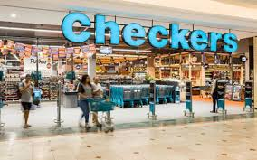
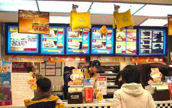

CHECKERS
1985 Launches the first grocery delivery system the country has ever seen. 1986 Introduction of an early version of product price scanning in stores. 1990 We launch the biggest customer engagement drive by a national retailer. 1991 Checkers joins the biggest food retail group on the continent.
WHERE IS IT LOCATED
You will find checkers store CLOSE to sheetstreet.